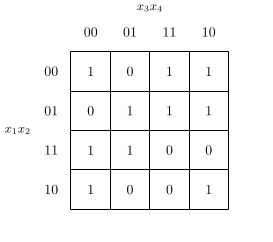

論理関数と積和形論理式を用いた処理¶
BoolFunc と Cover， Cube を用いて様々な 論理関数の最適化処理を行うことができる．
積和標準形(最小項)の導出¶
与えられた論理関数の最小項を得るには BoolFunc.gen_minterm_list を用いる．
on, dc, off = f.gen_minterm_list()
on, dc, off に関数 f のオンセット，ドントケアセット， オフセットを表す最小項のリストが返される． ここで，最小項は Cube のインスタンスとして表される． f が完全指定論理関数の場合(ドントケアを持たない場合)， on は積和標準形を表している． また， off を否定したものが和積標準形を表している．
最簡形論理式の導出¶
与えられた論理関数の最簡形積和形論理式を求める関数は lctools.qm で定義されているが，主要なものは BoolFunc から呼び出せるようになっている．
主項の列挙¶
Quine の定理により，最簡積和形論理式は主項のみから構成されるので， まず最初に主項の列挙を行なう． そのためには BoolFunc.gen_primes() を用いる． 内部では lctools.qm.gen_primes(minterm_list) が用いられている． ここで minterm_list は対象の論理関数の最小項のリストである． 通常は前述の gen_minterm_list の結果の on と dc を連結 したものが用いられる． 結果として主項を表す Cube のリストが返される．
論理関数の最適化¶
最簡積和形論理式を求めるには， lctools.qm.gen_minimum_cover(onset, primes) を用いる． ここで onset はオンセットを表す最小項のリスト ( Cube のリスト)， primes は主項のリスト( Cube のリスト)である． 簡便関数として BoolFunc.gen_minimum_cover() が用意されてている． これは onset と primes にそれぞれ gen_minterm_list，gen_primes の結果を用いたものである． 結果として最簡積和形論理式を表す Cover のリストが返される． たとえ，解が一つの場合でも結果はリストの形で返されるので注意すること．
例題¶
BoolFunc の形で与えられた論理関数 f に対する最簡形を求める サンプルコードを以下に示す．
from lctools import BoolFunc
# 関数の生成
f = BoolFunc('1011011110101100')
# カルノー図の生成
with open('f_karnaugh.tex', 'wt') as fout:
f.gen_latex_karnaugh(fout=fout)
この f_karnaugh.tex の結果は以下のようになる．
# 主項の生成
primes = f.gen_primes()
# これは以下のコードと等価
# on, dc, off = f.gen_minterm_list()
# primes = lctools.qm.gen_primes(on + cc)
# 主項を表示したカルノー図の生成
with open('f_primes.tex', 'wt') as fout:
f.gen_latex_karnaugh(implicant_list=primes, fout=fout)
この f_primes.tex の結果は以下のようになる．
# 最簡形の生成
cover_list = f.gen_minimum_cover()
# これは以下のコードと等価
# on, dc, off = f.gen_minterm_list()
# primes = lctools.qm.gen_primes(on + cc)
# cover_list = lctools.qm.gen_minimum_cover(on, primes)
# 個々の解とカルノー図の生成
for i, cover in enumerate(cover_list):
with open('f_cover{}.tex'.format(i), 'wt') as fout:
f.gen_latex_karnaugh(implicant_list=cover.cube_list, fout=fout)
fout.write('${}$\n'.format(cover.latex_str()))
この cover_list は3つの要素を持つ．
このようにカルノー図を出力する際に implicatn_list オプションを指定す ることで，積項を表示することができる． implicant_list には Cube のリストを指定する． gen_minimum_cover の結果は Cover のリストで与えられるので， Cover から Cube のリストを取り出すためにメンバ cube_list を用いている．